Research Projects
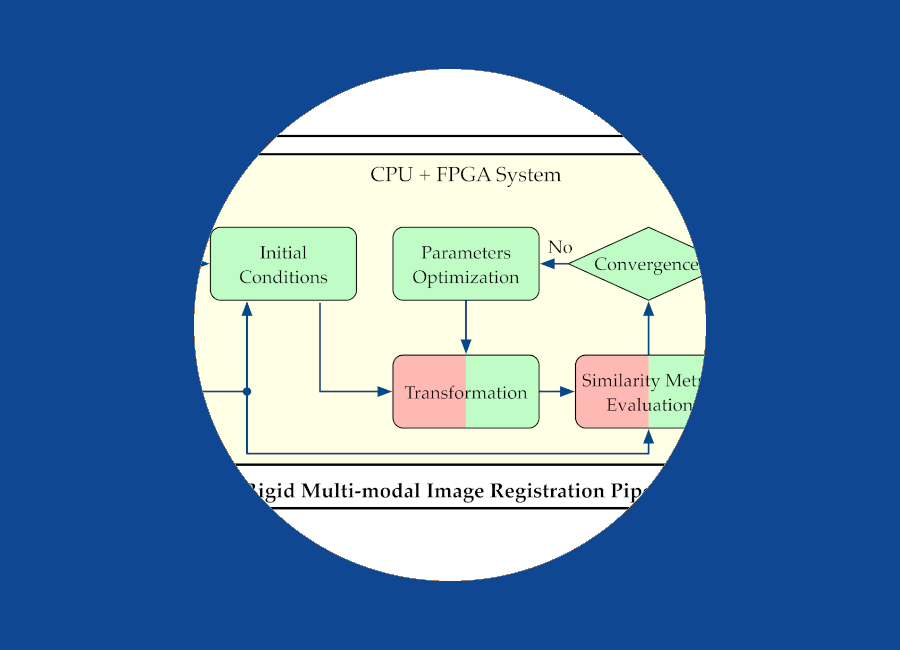
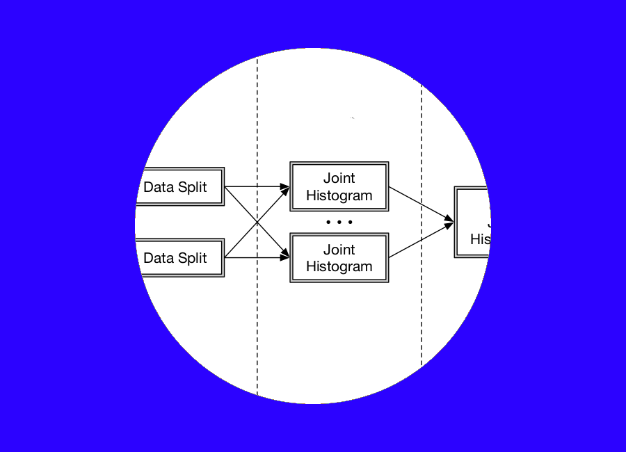
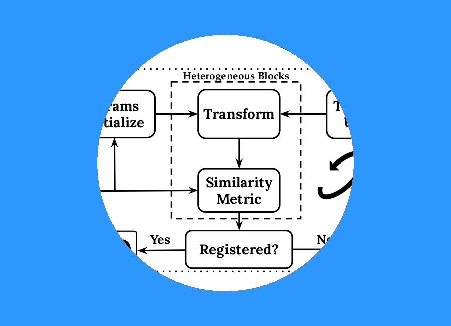

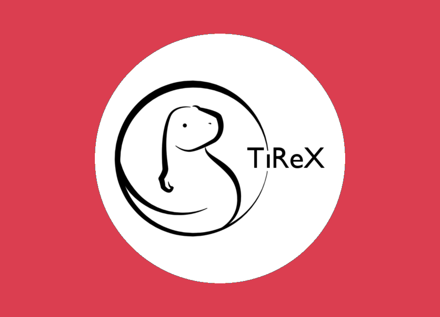
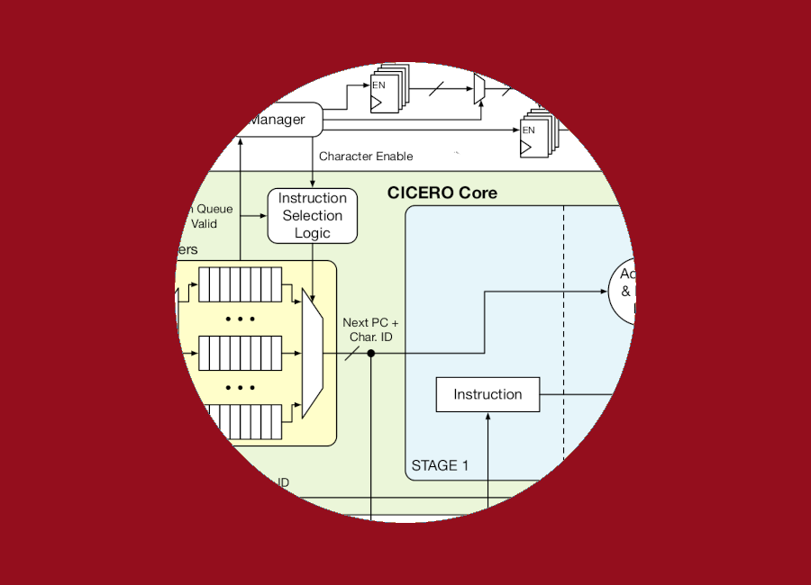
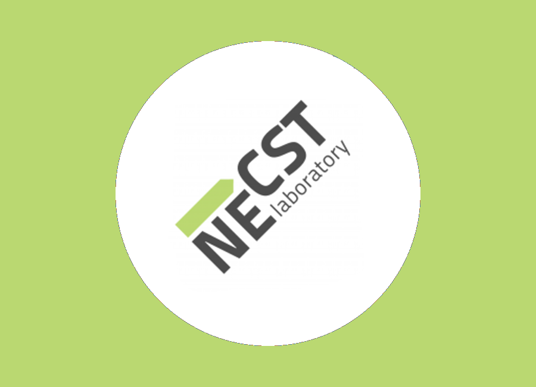
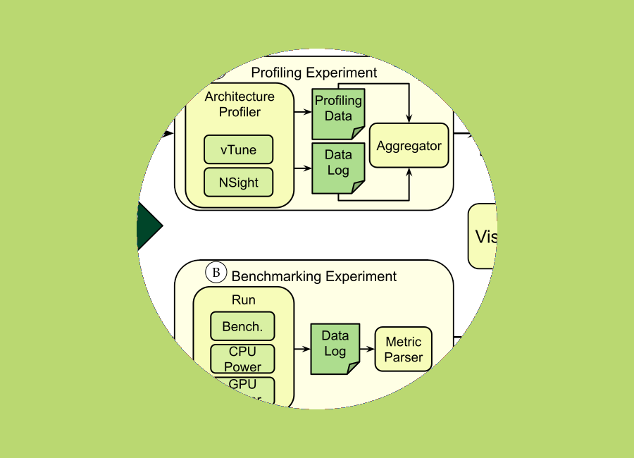

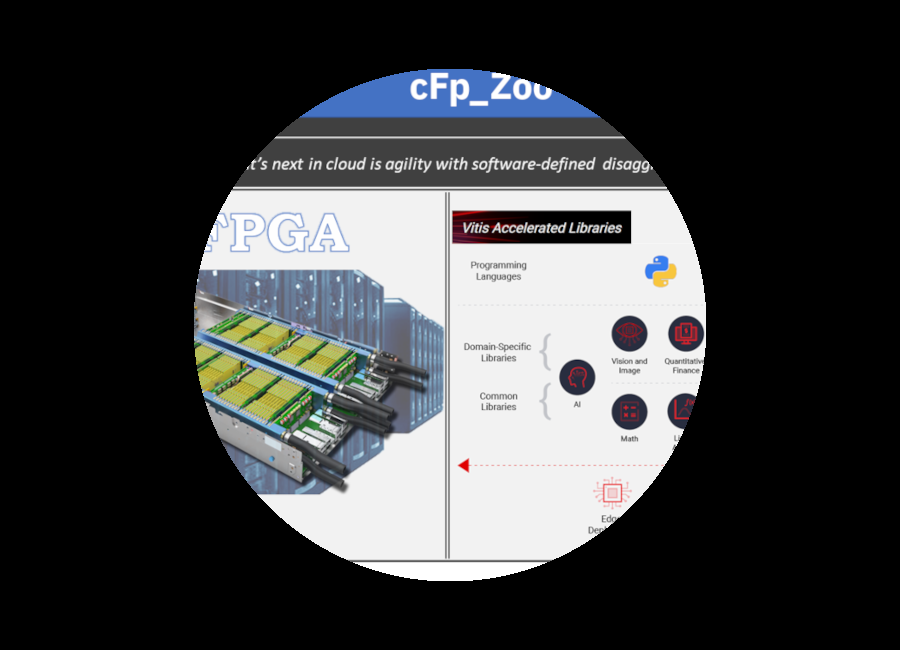
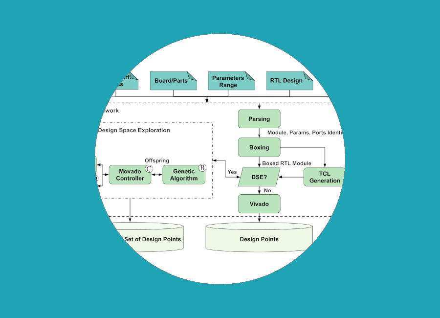
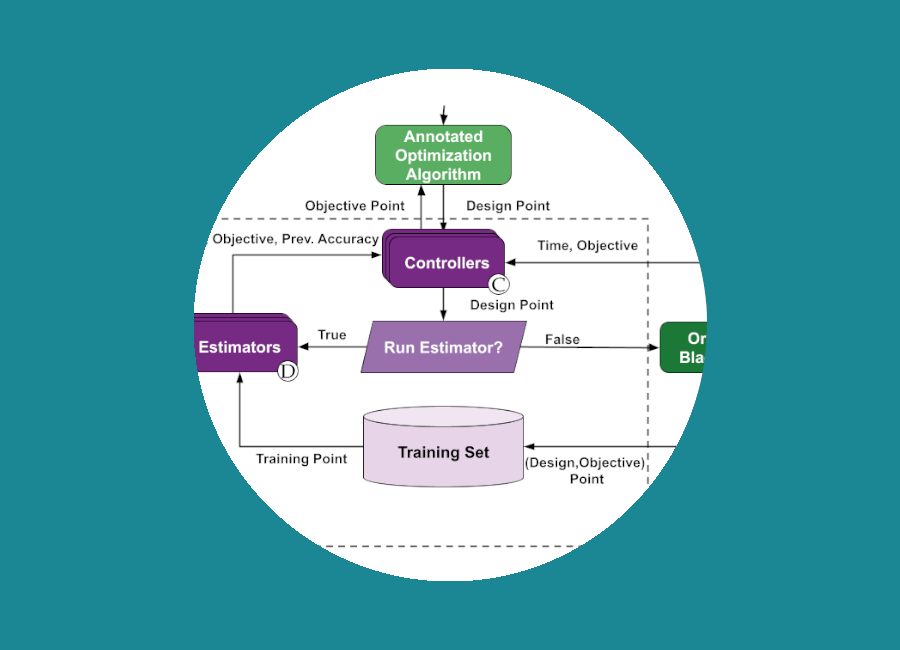
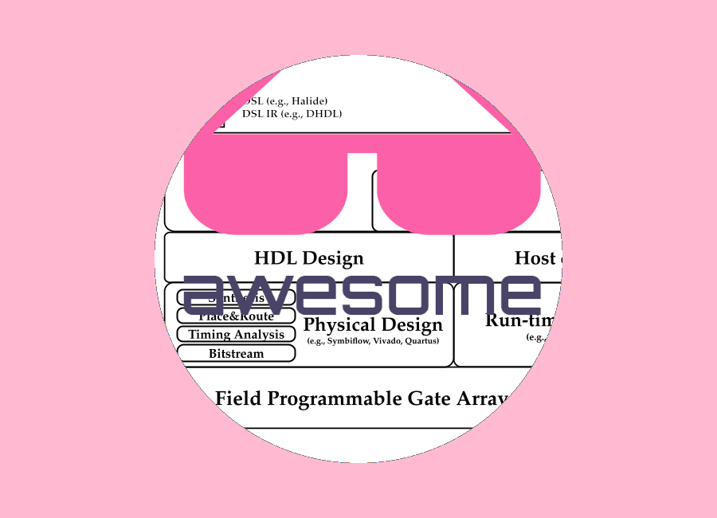
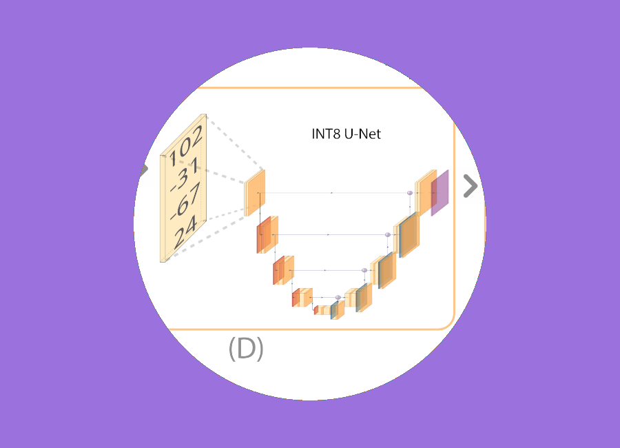
I am a Post-Doctoral Researcher at Politecnico di Milano, where I got my Ph.D. in Information Technology. I am focusing on Reconfigurable Computing, particularly Field Programmable Gate Arrays (FPGAs) (from the optimized design to design automation), Domain-Specific Architecture and their abstraction stacks (from the compilers to the programming).
I love playing basketball. I am a Spurs and Lakers fan. I mainly follow NBA news, highlights, and so on. I love reading books, mainly crime, thriller, and fantasy books. I am waiting for Martin to end "A Song of Ice and Fire." I am fond of Donato Carrisi books and popular physics books, such as those from Jim Al-Khalili and Carlo Rovelli. I also love to travel to discover new places and cultures.












Polimi: FPGA101 (Passion in Action)2022-Fall Cefriel: Hardware and Accelerators: FPGAs for AI, Specialization degree (Master universitario di primo livello) 2022 Learning Cefriel platform Polimi: Advanced Computer Architectures (ACA) (Master Course) 2022 - WeBeep Prof. Sciuto Polimi: FPGAcademy (Passion in Action) 2022-Spring-2021-2020 Prof. Santambrogio Website Polimi: ACA/HPPS (Master Course/UIC Double Degree) 2021-2020 Prof. Santambrogio Website